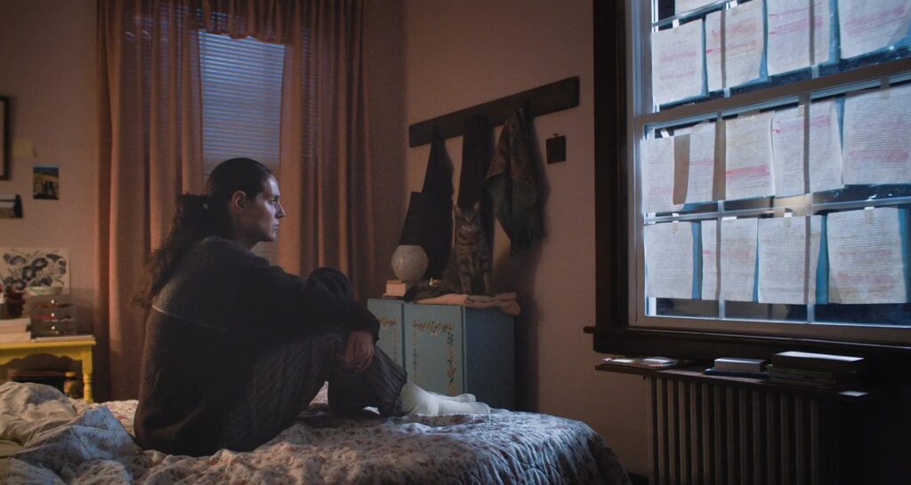
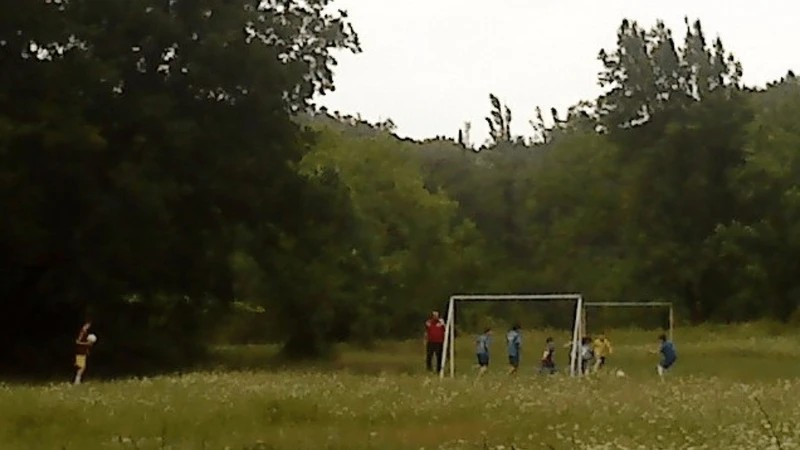
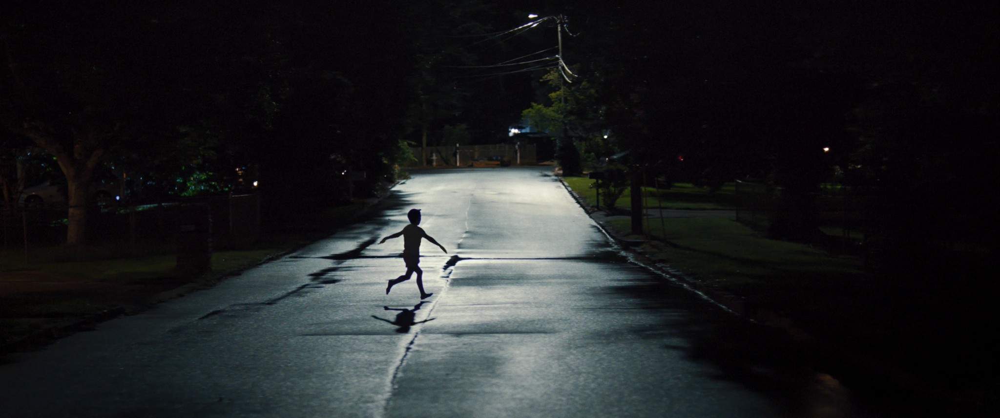
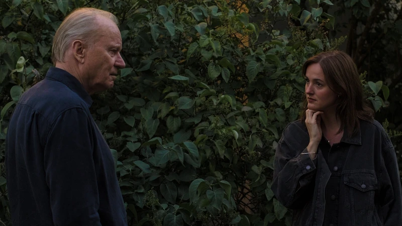
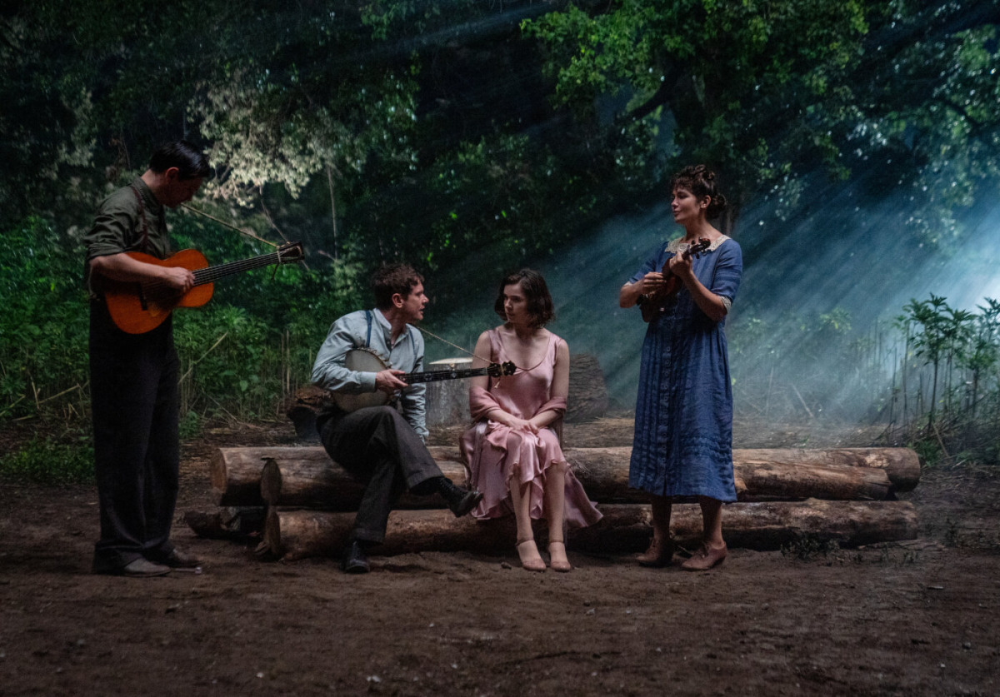
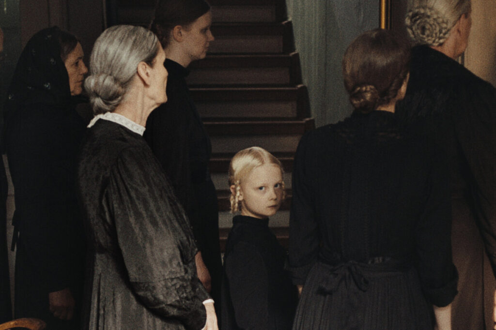
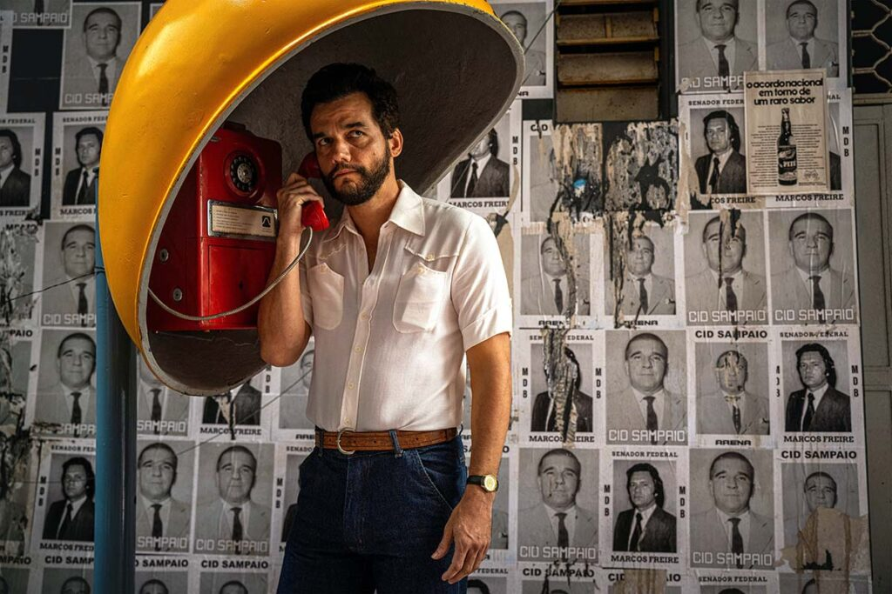
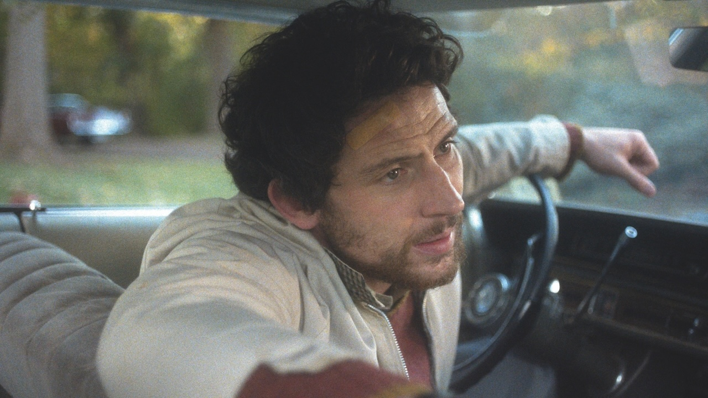
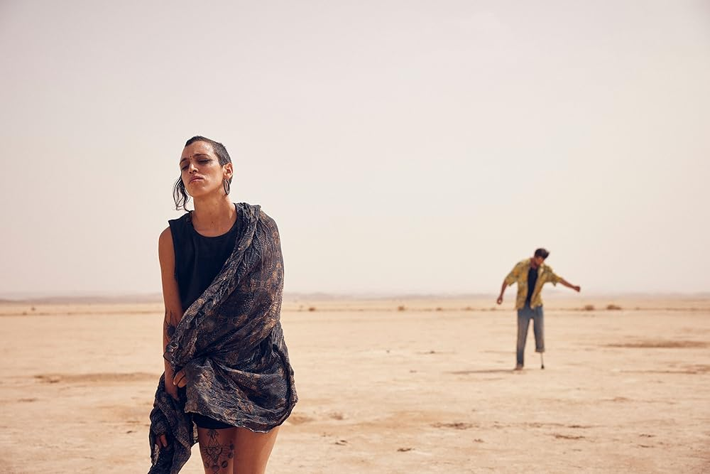
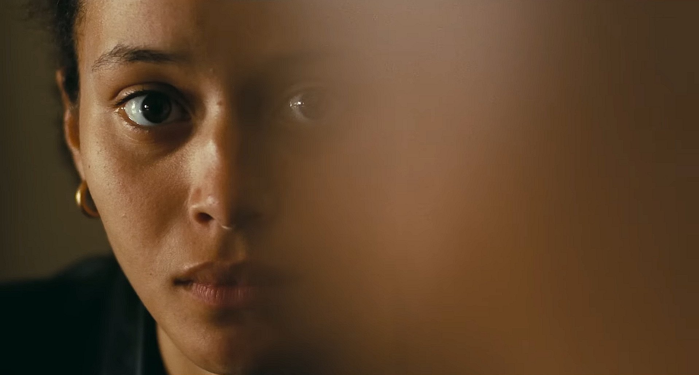

Önemli yönetmenlerin yeni filmlerinin izleyici ile buluştuğu geçtiğimiz yıla ait en iyi filmleri sizler için bu listede derledik.
10. Üzgünüm, Bebeğim / Sorry, Baby

Genç yönetmen ve yazar Eva Victor’ın “insanların sinemada izleyip o karanlık salondan yalnız hissetmeyerek çıkabileceği bir deneyimi amaçlayarak” tasarladığını dile getirdiği ilk filmi Üzgünüm, Bebeğim(Sorry, Baby, 2025), yılın başında senaryo ödülüyle ayrıldığı Sundance’teki dünya prömiyerinden bu yana, üzerinde kar topu gibi bir ilgi ve beğeni biriktirmeye devam ediyor. Eva Victor’ın kronolojik anlatmamayı tercih ettiği üç perdeyle bir araya getirdiği film, de yine başrolde Victor’ın canlandırdığı kahramanı Agnes’in başına gelen kötü olayın etrafında kurgulanıyor. Finalini yapacağı aynı yılın başlarında bir noktada açılan film, söz konusu etrafında şekillendiği olayı seyircisinden saklamadan, bir tür motivasyon yemine dönüştürmeden soğukkanlılıkla senaryosunun merkezinde tutuyor. Basitçe, yüksek lisansını tamamladığı okulda ve öğrenciyken yaşadığı evde kalmaya devam eden genç akademisyen Agnes’in yaşadığı travmatik olay sonrası hayata tutunma hikâyesini izliyoruz. (…) Hayatlarımızın en karanlık, en soğuk, en önümüzü göremediğimiz ya da nefes alamadığımız anlarında karşımıza çıkmasını isteyeceğimiz türden özel bir sıcaklık filmdeki. Agnes’i de filmde böyle anlarında birkaç karşılaşma yaşarken görüyoruz. Buz gibi ayazda market yolunda karşısına çıkan ve Agnes’e ihtiyacı olan sıcaklığı veren yavru kedi gibi…
Yazar: Kaan Denk
9. Kuru Yaprak / Dry Leaf

Locarno’nun yarışma seçkisinde birçok eleştirmenin favorisi olan ve FIPRESCI ödülüyle ödüllendirilen Alexandre Koberidze imzalı Kuru Yaprak (Dry Leaf, 2025) neredeyse anti-Dracula olarak nitelendirebileceğimiz bir yaklaşıma sahip. Jude’nin üzerine bastıra bastıra göstermeye çalıştığı, kadrajını tıka basa doldurduğu filminin aksine Koberidze, filminde görünmezliği bir estetik unsur olarak kullanıyor. Çok daha profesyonel bir ekiple çalıştığı ikinci filmi Gökyüzüne Baktığımızda Ne Görüyoruz?’un (Ras vkhedavt, rodesac cas vukurebt?, 2021) aksine bir anlamda özüne dönerek Kuru Yaprak’ı tıpkı ilk filmi gibi Sony Ericsson W595 telefonunun kamerasıyla çekmiş Gürcü yönetmen. Filmin ismi ise Türkçede “ölü yaprak vuruşu” olarak geçen ve topun izleyeceği güzergâhı ya da isabet edeceği noktanın belli olmadığı vuruşları ifade etmek için kullanılan bir futbol terimine gönderme yapıyor. Koberidze’nin en büyük tutkularından biri olan futbolun filmdeki yeri elbette filmin ismiyle sınırlı değil. Film, Lisa isimli 28 yaşındaki bir fotoğrafçının ailesinin, kızlarının onlara evi terk ettiğini haber verdiği bir mektup almasıyla başlıyor. Kızının durumundan endişelenen babası Irakli ise, Lisa’nın arkadaşı Levan’dan onun bir süredir Gürcistan köylerindeki futbol sahalarının fotoğraflarını çektiğini öğrenince arabaya atlıyor ve Lisa’nın izini sürmeye başlıyor. Irakli ve Levan’ınkisi tıpkı ağaçtan düşen o meşhur ölü yaprak gibi nasıl seyredeceği ve nereye varacağı belli olmayan bir yolculuk. Ve daha yolculuğun en başından bunun hiç de önemli olmadığını kavrıyoruz.
Yazar: Öykü Sofuoğlu
8. Silahlar / Weapons

Farklı korku gelenekleri arasında dolaşan bir önceki filmi Barbarian’la (2022) tanıdığımız Zach Cregger, yine bir Amerikan banliyösünde geçen ve 17 çocuğun aniden kaybolmasıyla açılan yeni filmi Silahlar’da (Weapons, 2025) da benzer bir yol izliyor. Cregger’ın bu üslubu, günümüz korku sinemasının en popüler isimlerinden Ari Aster’ın çağırışımlar üzerine kurulu senaryo ve kurgu tekniğini de fazlasıyla andırıyor. Bu teknik kısaca, seyircinin türden beklentilerine dair bir meydan okuma – nam-ı diğer “bir sonraki hamleni asla belli etme” (“never let them your next move”). Cragger, kendisi de senaryoya çocukların neden kaybolduğunu bilmeden başladığını söylüyor. Bir duyguyla başlıyor film, en temel insanlık hâllerinden biriyle: Kayıp ve yas. Sonra Üçüncü Türden Yakınlaşmalar (Close Encounters of the Third Kind, 1977) türü bir gizeme, ardından slasher’dan beslenen feminist bir modern bir cadı avı hikâyesine ve sonra ise kâbuslara Freddy Krueger yerine O’nun (It, 2017) palyaçosunun dadandığı bir Elm Sokağı Kâbusu (A Nightmare on Elm Street, 1984) filmine dönüşüyor. Bir sonraki bölümde bir tür “polis şiddeti” alegorisine ve politik korkuya dümen kuracakken, aniden tanıdıkların tuhaflaştığı bir Invasion of the Body Snatchers (1956) hikâyesinin ortasında buluyoruz kendimizi. Son olarak ise klasik bir cadı hikâyesiyle final yapacakken, bir tür zombi istilasıyla karşı karşıya geliyoruz. Cragger film boyunca özellikle “kişisel” yas duygusunu, sinemanın diline çevirmeyi ve o duyguya saplanıp kalmamayı başarıyor.
Yazar:Aslı Ildır
7. Manevi Değer / Sentimental Value

Dünyanın En Kötü İnsanı (The Worst Person In the World, 2021) sonrası bir kez daha Renate Reinsve’yle çalışan Joachim Trier, bu sefer iki kız kardeş ve yönetmen babaları arasındaki ilişkiye odaklanıyor. Cannes’dan Büyük Ödül’le dönen Manevi Değer (Affeksjonsverdi, 2025), pek çok yönüyle Trier’in bu zamana dek kalkıştığı en “büyük” işlerden biri. Trier’in bu büyüklüğün altından kalkıp kalkamadığı tartışılır, ancak filmin üç karakterin de iç dünyasına eşit derinlikte bakmak için büyük çaba harcadığını söyleyebiliriz. Aile içi ilişkilere, yaşlılığa, oyunculuğa, yönetmenliğe, sanata ve ölüme dair söyledikleriyle filmi Persona’dan (1966), Yaban Çilekleri(Smultronstället, 1957) ve Güz Sonatı’na (Höstsonaten, 1978) uzanan bir çizgide, tam anlamıyla “Bergmanesk” bir film olarak tanımlamak mümkün. Zaten filmde Stellan Skarsgård’ın canlandırdığı yönetmen karakteri de bir Bergman alter egosu gibi işliyor. Trier, başka ellerde ucuz bir melodrama dönüşebilecek bu hikâyeyi alıyor, olabildiğince inceltiyor ve kendine has o küçük, sessiz anlarda buluyor sesini. Filmde karşılaşmalar, yüzleşmeler ve büyük lafların edildiği sahnelerin değil de, sessizliklerin ve boşlukların daha çok çalıştığını söyleyebiliriz. Filmin fragmanlardan oluşan ve bu aile ağacının bugününden, geçmişinden ve geleceğinden kesitler sunan anlatı yapısı da etkili bu güçlü anların yaratımında. Her fragman sonrası aniden siyaha düşen sahneyle birlikte filmin bittiği izlenimine kapılıyor, bir süre zamanda asılı kalıyoruz. Filmin kendini o fazlasıyla büyük ve sofistike gören kibirli tarafını dengeleyen bir seçim bu, sürekli kendini kesintiye uğratması ve cümlelerinin sonuna nokta koymaması.
Yazar: Aslı Ildır
6. Günahkarlar / Sinners

Vampir türüyle western’i akıl almaz bir yaratıcılıkla birleştiren Günahkâlar (Sinners, 2025) ırkçılığın “sinema tarihini” yeniden yazan Kapan (Get Out, 2017) gibi filmlere akraba. 1800lerin sonunda, Ku Klux Klan’ın fazlasıyla hakim olduğu bir dönemde geçen film, siyahların güven içinde içip eğlenebileceği bir taverna açmayı kafaya koymuş ikiz kardeşler Smoke ve Stack’e odaklanıyor. Blues ruhunun “şeytanı bile” ayarttığı filmde geçmiş ve geleceğin ruhlarının iç içe geçtiği bir sahne var ki, son yılların en tüyler ürpertici ustalıkta çekilmiş “video kliplerinden” birine imza atıyor. Mitolojik olarak fazlasıyla ırkçı kökenleri olan kan emici vampirler ise, neredeyse politik denebilecek öfkeleriyle beklediğimizden çok daha farklı bir temsile bürünüyor, şekli şemali belirsiz bir intikam arzusunun sembolü oluyor.
Yazar: Aslı Ildır
5. Düşüşün Tınısı / In Die Sonne Schauen

Özellikle kadınların maruz kaldığı ve zaman geçtikçe biçim değiştiren baskıların yanı sıra, Alman toplumuna nüfuz etmiş kolektif travmaları ve korkuların oldukça dolambaçlı bir yol üzerinden takip eden Düşüşün Tınısı (In die Sonne schauen, 2025); Almanya’da bir çiftlikte, farklı dönemlerde yaşamış dört genç kızın birbirinden iç karartıcı yaşamlarına dâhil ediyor bizi. Ancak Schilinski’nin filminin değerlendirmelere, eleştiriye direnen bir tarafı da var. Yönetmenin kurduğu dört katmanlı, geçirgen ve bulmacalı anlatı evreni, onları keşfetme ve ilişkilendirme süreciyle seyircisinde yankı bulmayı amaç ediniyor. Dolayısıyla Alma, Erika, Angelika ve Lenka isimli bu dört genç kızın her birinin hangi dönemde yaşadığını, aralarında nasıl bir bağ olduğunu analiz etmeye çalışmaktansa Schilinski’nin anlatı izlekleri arasındaki geçişlerde ne tür görsel ve işitsel stratejiler benimsediği üzerine kafa yormak çok daha ilgi çekici bir hâl alıyor. (…) Düşüşün Tınısı, farklı zamanlarda, mekânın, bedenin ve belki de toplumun hafızası aracılığıyla hayatları birbirine geçen karakterlerin bu metafizik etkileşimlerini anlatısının içine serpiştiren bir yapım. Ancak bu etkileşimler, bir yapbozun parçaları ya da biz seyirciyi nihai bir kavrayışa götürecek ipuçları değil kesinlikle. Schilinski’nin bu yaklaşımında bireyin özellikle bir şeylere maruz kalan, mirası devralan ve daha pasif bir deneyimle tahayyül edilen varoluşu bizlere de sıçrıyor sanki. Düşüşün Tınısı‘nı izledikten sonra imgelerin içimizden geçip gittiğini, onları yakalayıp anlam kutucuklarına yerleştirmenin pek de mümkün olmadığını hissediyoruz.
Yazar:Yazar: Öykü Sofuoğlu
4. Gizli Ajan / O Agente Secreto

1977 yılında, yönetmenin diğer filmleri için de mekânsal çerçeve sunan Recife şehrinde geçen Gizli Ajan (O Agente Secreto, 2025); sonradan başlangıçta Marcelo olarak tanıtılan, sonrasındaysa isminin Armando olduğunu öğrendiğimiz ve başı hükümetle derde girmiş eski bir akademisyeni merkezine alıyor. Merkezine alıyor desek de Gizli Ajan‘ın takdir edilesi biçimde “dağınık” bir film olduğunu vurgulamak gerek. Zira yaklaşık iki saat kırk dakika uzunluğa sahip film, ilk yarısında renkli ve özgün karakterler ve dallanıp budaklanmış mini anlatılar arasında ana hikâye akışını aramaya yönlendiriyor seyircisini. Mendonça Filho, dönem mozaiği yaratmak konusunda gerçekten usta bir yönetmen. O yıllara damga vuran filmlerden, şehri kasıp kavuran karnaval ya da yerel gazete haberleri film için basit birer zamansal göstergeye indirgenmiyor ve onları filmin anlatı kumaşında tutarlı ve kendi içinde bir anlam ifade eden motiflere dönüştürüyor. Başka bir yönetmen olsa Netflix tarzı bir mini-dizi formatında çekeceği bu hikâye, Mendonça Filho’nun eleştirel ve sinefil perspektifinde tür sinemasının kodlarını şekilde eğip büken, onlara “yanlış yönlendirmelerle” farklı anlamlar kazandıran sürprizli bir boyut katıyor.
Yazar: Öykü Sofuoğlu
3. The Mastermind

Kelly Reichardt imzalı The Mastermind (2025), başarısız bir soygun girişimini konu alan, yönetmenin “anti-tür” denemelerinden biri. Meek’s Cutoff (2010) ve İlk İnek (First Cow, 2019)’la western’i şiddetsiz ve silahsız, çok daha az erkek-egemen bir tür olarak ele alan Reichardt, burada ise soygun filmi türüne farklı bir bakış getiriyor. Başrolde Luca Guagdanino’dan Alice Rohrwacher’e son dönemde pek çok yönetmenin radarına giren Josh O’Connor, başrolün eşi rolünde ise yine bir 70’ler filmiyle, Licorice Pizza’yla (2021) gönlümüzde taht kuran Alana Haim yer alıyor. Çoğunlukla erkek kahramanların ön planda olduğu, aksiyon ve hız odaklı bu tür, Reichardt’ın elinde olabildiğince sakin (yavaş değil), “beceriksiz” ve Buster Keaton’dan Wes Anderson’a uzanan bir skalada komik bir türe dönüşüyor. Her şeyin sakin sakin ilerlediği, büyük fikirler ve hayaller dışında pek de büyük bir olayın yaşanamadığı bu filmde, bir müzeden dört tablo çalmayı planlayan bir aile babasının, mimar James’in hikâyesini takip ediyoruz.
Yazar: Aslı Ildır
2. Sırat / Sirat

Tüm gücünü şok etkisinden alan, anlaşılmaz ve neredeyse seyircisine karşı zalim bir film Sırat (Sirât, 2025). Fas’ta bir çölün ortasında gerçekleşen bir rave partisinde açılıyor film. Kayıp kızının peşinden partiye gelen bir baba ve oğlu, kendilerini bir grup rave aşığıyla bir tür “Sirât köprüsü” yolculuğunda buluyor. Kelimelerle anlatmanın fazlasıyla zor olduğu, yoruma, açıklamaya ve analize direnen bir doğrudanlığı var filmin. Aynı anda hem bu derece kurgulanmış, hem de böylesine “kader işte” diyecek denli rastgele bir akışa, belki sahiden sadece gerçek hayatta rastlamışızdır. İlla ki bir şeye benzeteceksek, Mad Max’in post apokaliptik dünyasında dans ederken, bir anda kendinizi Kiorastami yollarında ulvi bir yolculukta bulduğumuz, ardından gelen ani kırılmayla Haneke’ye rahmet okutacak bir şekilde kontrolü kaybettiğimiz bir “deneyim” diyebiliriz film için. Hikâye anlatmak eğer gerçek hayata – genelde geriye dönük olarak – bir çerçeve çizmek ve anlam yüklemekse, Sırat’ın hikâyesinin tam tersi bir işlevi olduğunu rahatlıkla söyleyebiliriz. Filmin “doğru” bir açıklaması ya da yorumu yok. Ancak tersinden gidelim ve “ne olmadığını” söyleyelim: Sırat’ın rave müziği ve uyuşturucuyla yoğrulmuş atmosferinden bir rüya/halüsinasyon deneyimi beklemek hata olur. Filmi çağrışım/rüya mantığıyla açıklamaya çalışmak ise sonuç vermeyecektir, çünkü rüya da halüsinasyon da zihnin kendine anlattığı anlamlı bir hikâyedir aslında. Sırat’ın çalışma prensibiyse daha çok o büyük bilinmeyene dayanıyor: kader, tanrı ya da kozmos, nasıl adlandırmak isterseniz.
Yazar: Aslı Ildır
1. Savaş Üstüne Savaş / One Battle After Another

Bir dijital platforma iş yapmayan veya diziye yönelmeyen ender büyük yönetmenlerden biri olarak, yaratıcılık krizlerini müzik klipleri ve belgesellerle aşan PTA’nın son filmi Savaş Üstüne Savaş (One Battle After Another, 2025) hem tanıdık hem bambaşka bir film. Babalık, biyolojik ve seçilmiş aile kavramları başat tema. Bir kız ve biri biyolojik, diğeri seçilmiş iki baba var. Bir yandan da manevi babalarından birçok şey ödünç almaktan ve onlara saygı duruşunda bulunmaktan geri adım atmıyor yönetmen.(…) Beyaz merkezli dünya görüşünde artık Siyahlara, Hispaniklere ve Yerlilere de yer var. Savaş Üstüne Savaş’taki modern Ku Klux Klan’a karşı direniş ve dayanışma hattını ötekilerden kuruyor. İlk kez Beyazlar filmin kötüsü, dalga konusu (…) Eskinin tavizsiz auteur’ünün yerinde izleyiciye jest yapan, oyuncağını paylaşan biri var. İlk kez izleyiciden bir şey talep etmiyor, hikâyesi de hikâyeleme tarzı da ana akım. (…) Belki de artık bir baba olduğu ve kendisini baba olarak gördüğü için, evlatları için endişeleniyor. Onların geleceğine ışık tutmak ve yükselen faşizme karşı uyarmak için ilk kez apolitikliği kenara bırakıyor ve doğrudan günümüze ve siyasete odaklanıyor. Savaş Üstüne Savaş, PTA için belki de yeni bir evrenin başlangıcı.
Yazar: Tanju Baran